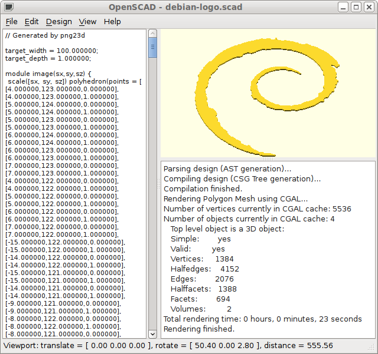
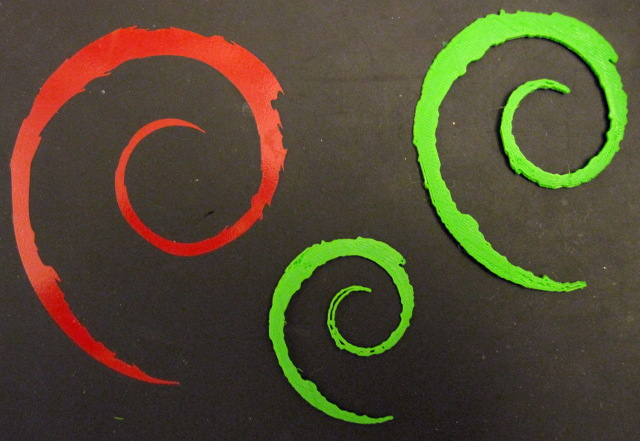

Debian open logo and scad output
First example is a simple extrusion of the Debian logo into a SCAD file.
The Debian open use logo in PNG format was downloaded from the Debian logos page. 
The image was run through gimp and neatened up into only thicker areas, scaled to 200pixels wide using the cubic method and reduced to black and white. The colour reduction was not strictly neccissary but made the intermediate image clearer.
The png23d program was run to generate a polyhedon scad output file with a width of 100.
$ png23d -o pscad -w 100 -d 1 debian-logo.png debian-logo.scadThe default result in a smooth extrusion with a single level (every pixel is opaque at this level) and white (colour 255) used as transparent. The output width is 100 units and the depth is set to 1.
The resulting scad file was then loaded into openscad and compled/rendered.
Obviously the image module can now be used in any scad design as the user sees fit. The polyhedron can be scaled and mutated as any other object in an openscad model.
The output width was changed to 75 and a compiled and exported as STL and then printed. This was repeated at width 50. I did not have any red filament so the results are in green but is shown here next to a red vinyl sticker on the back of my laptop.
{kind=link}